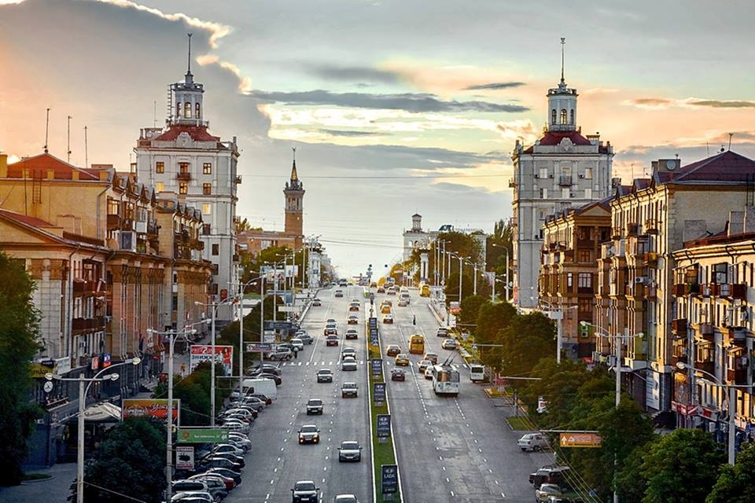

Територія
Запоріжжя розкинулося на обох берегах Дніпра, між якими розташований острів Хортиця. Площа міста — 331 кв.км, і це п’яте за площею місто України. Водні ресурси займають 13% території, промислові та складські об’єкти розмістилися на 24%, під сільське господарство використовуються 18%, решту займає житлова забудова.
Місто розділене на сім адміністративних районів: Олександрівський, Заводський, Комунарський, Дніпровський, Вознесенівський, Хортицький, Шевченківський. Центром міста вважається лівобережна частина Дніпровського району, Вознесенівський та Олександрівський райони. У Заводському районі зосереджені промислові підприємства, але також є житлові масиви. Решта районів — переважно спальні.
До складу міста входить близько 1300 проспектів, вулиць, провулків та площ. Візитівка Запоріжжя — головна вулиця міста, проспект Соборний, який простягнувся на 10,8 км через чотири райони міста.

Проспект Соборний, фото: Сергій Лавров
Запоріжжя сусідить з Запорізьким, Вільнянським, Оріхівським, Василівським і Кам’янсько-Дніпровським районами Запорізької області. У складі області місто ділить кордони з Дніпропетровською, Донецькою та Херсонською областями, південний кордон проходить вздовж узбережжя Азовського моря.
Транспортна інфраструктура
Залізничний транспорт
Запоріжжя — значущий пункт залізничного сполучення, який відноситься до Придніпровської залізниці. У місті функціонують два залізничні вокзали — Запоріжжя-1 та Запоріжжя-2.
Автомобільні перевезення
Транспортний зв'язок між лівим і правим берегами міста здійснюється через греблю ДніпроГЕСу і мости через Хортицю. Територію міста пересікають важливі транспортні артерії: шляхи національного значення: Н08, Н23, Н15; європейська траса Е105; дорога міжнародного значення М14. Міжміські автобусні перевезення пасажирів здійснюються трьома автостанціями і одним автовокзалом.
Клімат
Запоріжжя лежить в зоні континентального клімату у південній кліматичній області, яка характеризується посушливістю та великою кількістю сонячних днів. У місті тепле і довге літо — воно може тривати з початку травня до кінця вересня. Зима помірно м’яка і малосніжна
Середньорічна температура — +9,0°C, середня температура липня — +22,8°C, січня — -4,9°C. Абсолютний максимум температур — +40,2°C, мінімум — -29,3°C.
Промисловість
Запоріжжя — один з найбільших промислових мегаполісів країни. У ньому зосереджені машинобудівний, енергетичний металургійний комплекси державного значення. Промисловий потенціал міста — понад 290 підприємств.
Металургійний комплекс міста представлений підприємствами чорної та кольорової металургії:
- ПАТ «Запорізький металургійний комбінат «Запоріжсталь» — провідний виробник прокату, сталі та чавуну;
- ПАТ «Запорізький завод феросплавів» — провідний виробник феросплавів;
- ПрАТ «Електрометалургійний завод «Дніпроспецсталь» — виробник спеціальних сталей;
- ТОВ «Титано-магнієвий комбінат» — єдиний в Україні виробник губчатого титану, який також виробляє титанові зливки.
Освіта
У Запоріжжі фахівців готують вісім вищих навчальних закладів рівня акредитації, основними з яких є:
- Запорізька державна інженерна академія;
- Запорізький державний медичний університет;
- Запорізький інститут економіки і інформаційних технологій;
- Запорізький національний технічний університет;
Освітні послуги надають 17 професійно-технічних навчальних закладів, 123 загальноосвітні школи I-III ступенів. Для навчання обдарованих дітей працюють 9 ліцеїв, 3 колегіуми, 17 гімназій, 6 спеціалізованих шкіл з поглибленим вивченням окремих предметів. За результатами ЗНО 2017 року дві запорізькі гімназії увійшли у ТОП-100 шкіл країни.